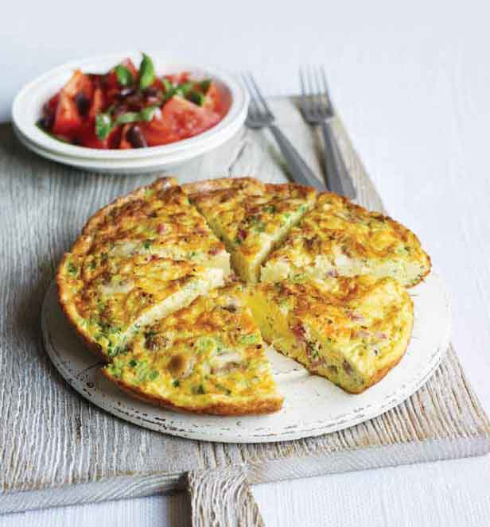

Ingredients: Serves 3
- 6 eggs
- 2 tbsp fresh chopped herbs of your choice
- Large handful leftovers such as grated cheese, chopped ham, sliced sausage, cooked bacon rashers, tuna or smoked salmon
- 3 spring onions, finely chopped
- 125g cooked pasta or 200g chopped cooked potato
- Handful of veg such as frozen spinach or peas, corn, roasted peppers, fried courgettes or mushrooms
- 1½ tbsp vegetable oil
- Tomato salad, to serve (optional)
Cooking Instructions:
- Beat the eggs with seasoning and your chosen background flavour, then add your leftovers. Stir in the spring onions and pasta or potatoes with your selected veg.
- Turn on the grill to high. Heat the oil in a medium non-stick frying pan and tip in the egg mixture. Cook gently for 10 mins over a low heat until three-quarters set, then flash under the grill to set the top. Serve with a simple tomato salad.
